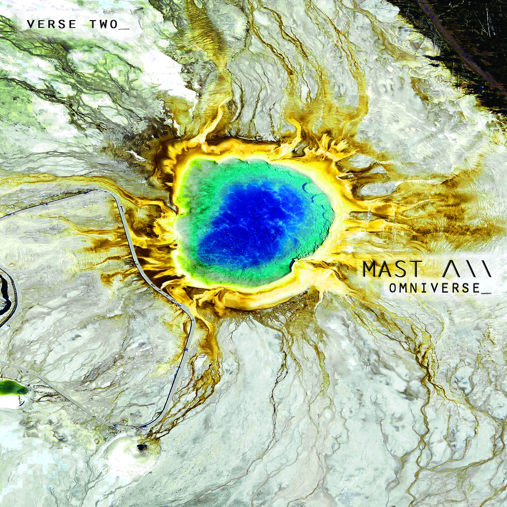

Album biography
About the work
The Omniverse series unfolds through connected EPs—or “verses”—that form one continuous, through-composed sonic universe. Its acoustic and electronic landscapes draw on quantum physics, space-time travel, astral bodies and Miles Davis.
Guitar, Fender Rhodes, synthesizers, bass and jarring beats were performed by MAST / Tim Conley in his Los Angeles studio.
Featuring
MAST / Tim Conley
Track listing
- The Multiverse
- The Polytetrahedron
- Miles Behind Agharta
- The Omniverse
- Apollo 11 / Luna Pt. 2
- Mother Earth Yields to NoMa(n)(d)
Personnel & credits
Label: Alpha Pup Records
Release: June 23, 2015
MAST / Tim Conley — guitar, Fender Rhodes, synthesizers, bass, beats and production
Mastered by Daddy Kev at Cosmic Zoo, Los Angeles.
“..captures the engaging blend of electronic music, jazz and hip-hop that’s been thriving in the underground. What once sounded like the future has arrived right on time.”— Los Angeles Times